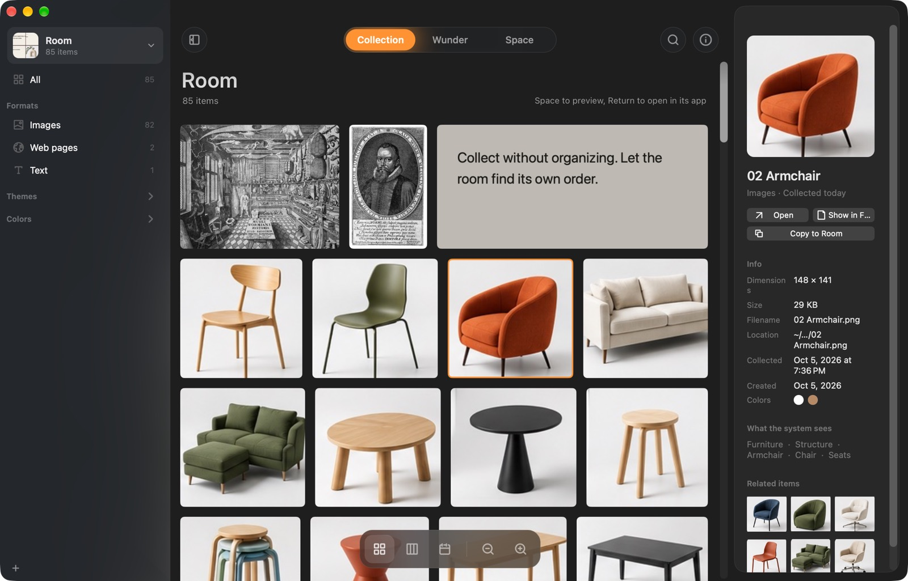
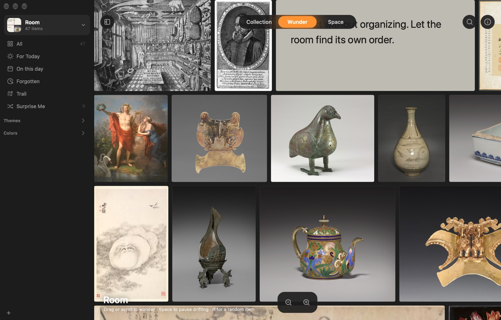
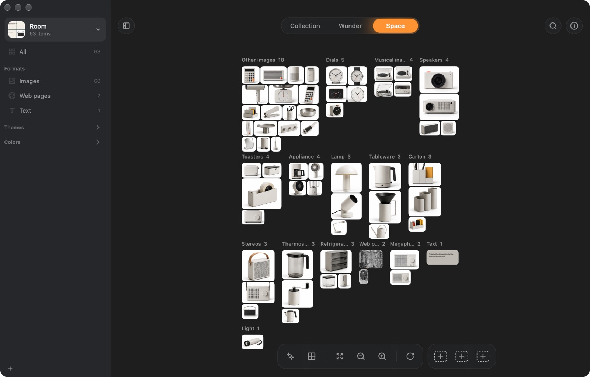

watch a folder
pick up to three folders. whatever lands in them comes into the room by itself, and leaves when you take it out. the files stay where they are.
 wunder.
wunder.a cabinet of curiosities for your mac. collect anything, organize nothing.
download for macfree · 4 MB · macOS 14 or later · first time opening it?
1what it is
pictures, links, quotes, screenshots, files. press ⌘⇧C and it's in. no folder to pick, no name to type.
wunder looks at what you keep: the words in a picture, what's in it, its colors. so you can find it later without ever having filed it.
2why it's different
folders ask where something goes before you know why you kept it. so things end up nowhere, or everywhere.
wunder sorts itself, by format, kind, theme and color. and it brings old things back, so what you collected doesn't just sit there.
3how it works
try it here: press ⌘⇧C, or click the key above.
4what you get
what fits
from the web, your camera or your disk. the text inside them becomes searchable.
JPEGPNGHEICWebPGIFTIFFRAWPSDplays in place when you rest on it.
MOVMP4M4Vdrawn as a waveform you can play.
MP3M4AWAVAIFFFLACthe text on every page is searchable.
PDFany link, kept as a full-page copy so it stays even if the site goes. books, films, music, products and places are recognized.
URLcopied words become cards that remember where they came from.
TXTRTFHTMLpick a region or a window, and it's in.
⌃⌘⇧Ckept with its own preview, and opens in its own app.
KeynoteFigmaZIP…rooms
open a room for each project, client or mood. each has its own collection, cover and folders: point it at folders to watch and new files come in by themselves, or let it file everything into a folder of its own. rooms can sync between your macs through iCloud.


 current
current


 iCloud
iCloud


 iCloud
iCloudfolders
pick up to three folders. whatever lands in them comes into the room by itself, and leaves when you take it out. the files stay where they are.
rather keep your own copy? the room gets a folder of its own, and everything you collect is copied in under its own name.
search
browse it as a grid, a wall or a timeline. the sidebar fills itself in with formats, kinds, themes and colors.


a wall that drifts on its own. “for today” picks a dozen things you'd forgotten, and says why.


pile things by format, kind, theme or color. move them around, draw lines between them, and keep three layouts to come back to.


space
pile the same things by format, kind, theme or color. everything flies to where it belongs, and you can switch back any time.
keep what catches your eye
| wunder | Atlas | Eagle | |
|---|---|---|---|
| price | free | $39 | $29.95 |
| sorts itself, no folders or tags to set | ✓ | – | by rules |
| find a picture by describing it | ✓ | – | ✓ |
| brings old things back every day | ✓ | – | – |
| a canvas to arrange freely | ✓ | ✓ | – |
| everything stays on your mac | ✓ | ✓ | ✓ |
| also on windows | – | – | ✓ |
based on each app's website, october 2026.
a place on your mac for the things you don't want to lose, but don't want to organize either. it keeps pictures, web pages, text and files, figures out what they are, and helps you find them again.
wunder isn't notarized by apple yet, so the first time macos stops it. open system settings → privacy & security, scroll down and click open anyway. you only do this once.
or, in terminal: xattr -dr com.apple.quarantine /Applications/Wunder.app
no. reading text in pictures, recognizing what's in them, colors, similar pictures and questions all run on your mac with apple's own frameworks. wunder only goes online to fetch the pages you collect, the optional description-search model (about 106 MB, once), and to check for a new version.
no. it remembers where they are, and follows them if you move them. if you'd rather keep copies, a room can save every file into a folder of its own.
turn on sync for a room and it moves into iCloud Drive. any mac signed in to your apple account can open it. if two macs change it at once, both changes are kept.
a mac with macOS 14 sonoma or later. asking your collection questions needs apple intelligence (macOS 26).
yes. the source is on github.
free for mac. no account, no setup.
download for mac